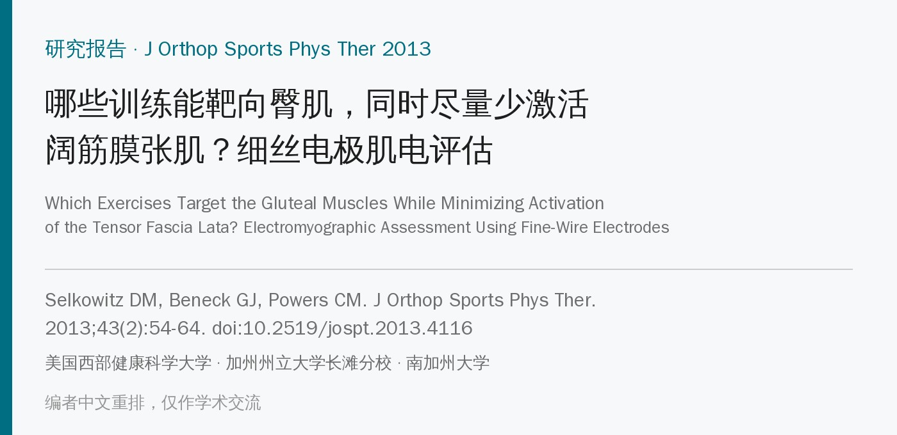
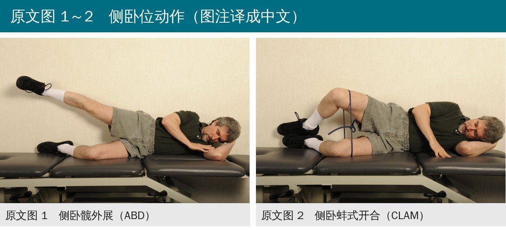
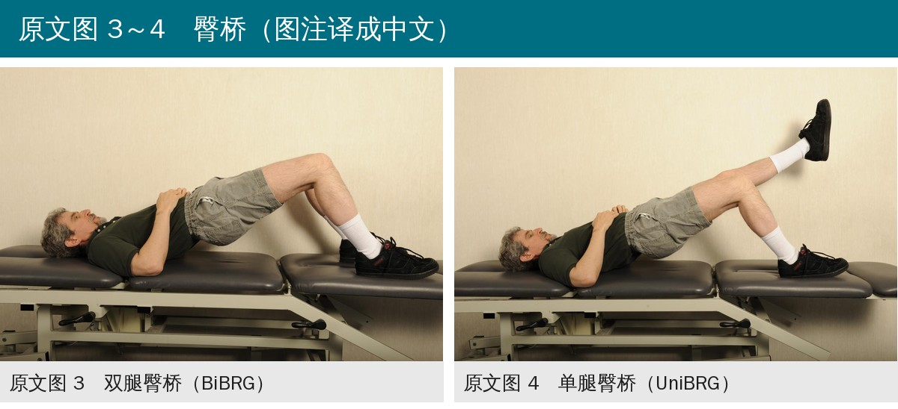
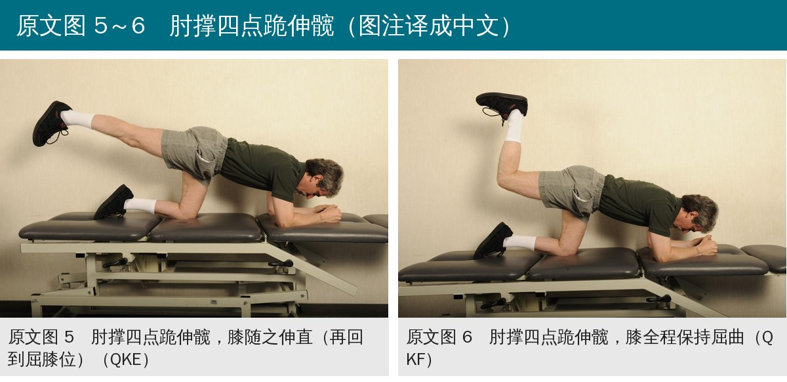
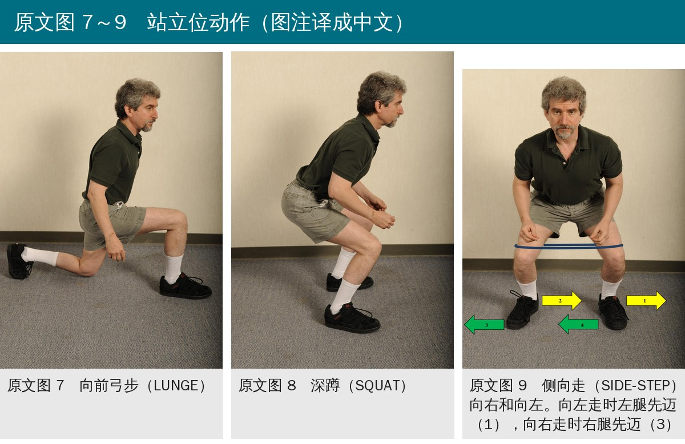
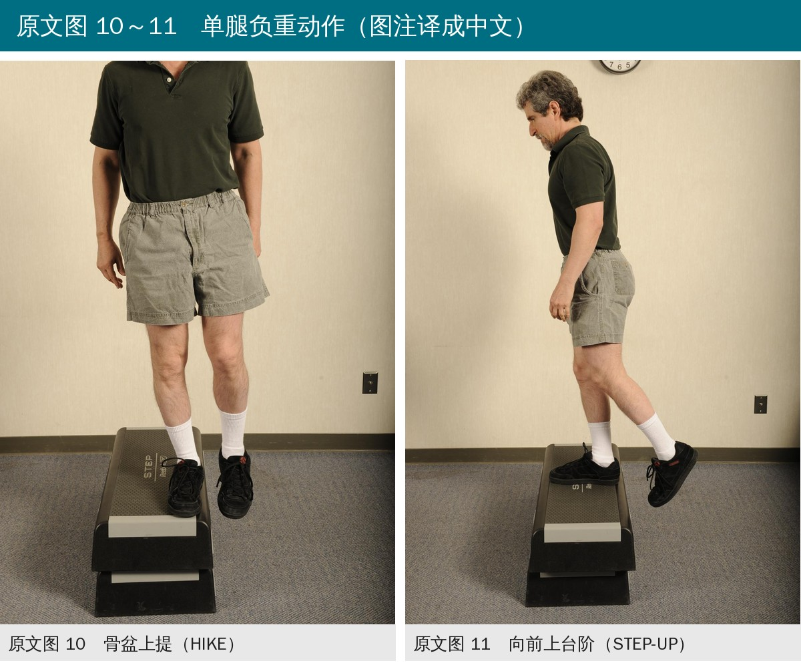
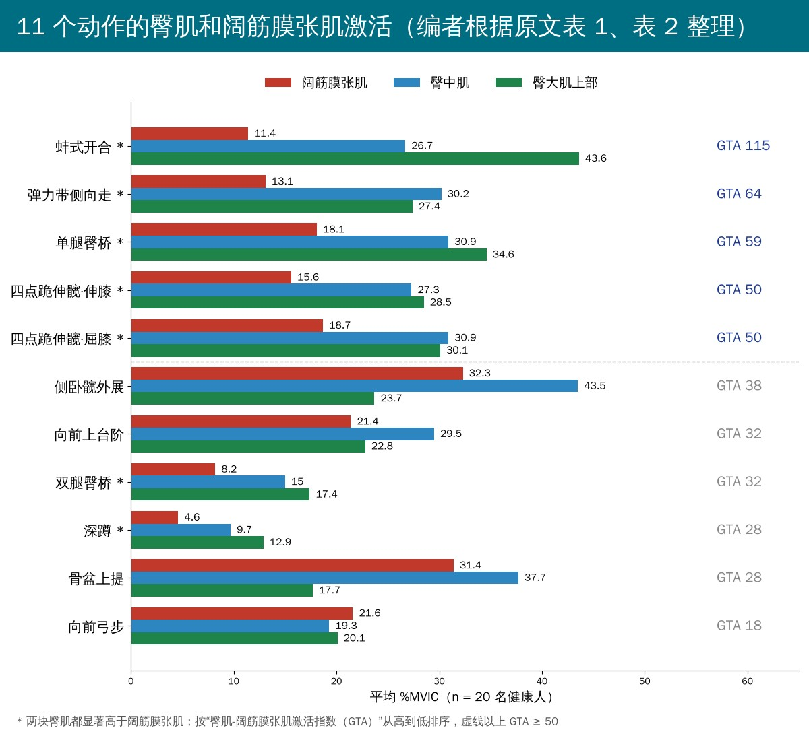
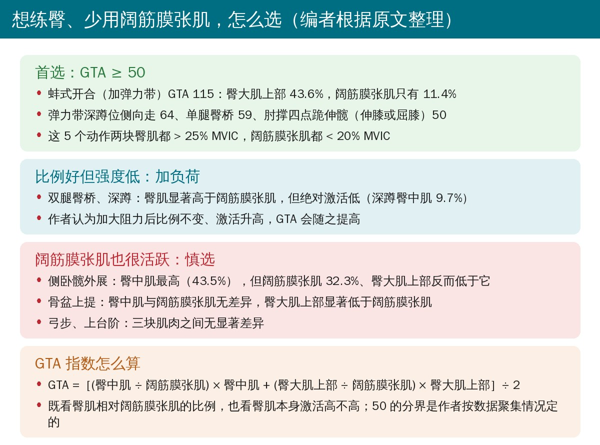

🔖原文信息（编者中文重排）
📚 文献信息
▪ Selkowitz DM, Beneck GJ, Powers CM. Which exercises target the gluteal muscles while minimizing activation of the tensor fascia lata? Electromyographic assessment using fine-wire electrodes. J Orthop Sports Phys Ther. 2013;43(2):54-64. doi:10.2519/jospt.2013.4116
▪ 中文题目：哪些训练能靶向臀肌，同时尽量少激活阔筋膜张肌？细丝电极肌电评估
▪ 作者来自美国西部健康科学大学物理治疗教育系、加州州立大学长滩分校物理治疗系、南加州大学 Jacquelin Perry 肌骨生物力学研究实验室
▪ 研究类型：对照实验室研究，重复测量设计（本文依据作者接收稿 PDF 解读）
• 髋内收、内旋过多和髋肌功能下降，与髌股疼痛、髂胫束综合征、前交叉韧带损伤、腰痛和髋关节病变都有关；髌股疼痛患者常见髋外展、外旋、伸肌无力
• 臀中肌中部主管髋外展，臀大肌主管伸髋和外旋，其上部在步行中也参与外展，所以加强这两块肌肉常被用来控制负重时的髋内收内旋
• 阔筋膜张肌（TFL）也是髋外展肌，但同时内旋髋关节，还能通过髂胫束向外牵拉髌骨；髋退变患者还出现臀大肌相对 TFL 萎缩
• 既往研究多用表面肌电，相邻肌肉之间有串扰，而且大多没有同时测 TFL
• 研究目的：用细丝电极比较 11 个常用动作中臀中肌、臀大肌上部和 TFL 的激活，找出“臀肌高、TFL 低”的动作
• 受试者：20 名健康人（男女各 10），18～50 岁，平均 27.9 岁；无躯干、下肢肌骨疾病和神经系统疾病
• 细丝电极：在优势侧（踢球那条腿）的臀大肌上部、臀中肌中部和 TFL 插入 50 µm 镍铬合金丝电极，通过电刺激和触诊确认位置
• 标准化：每块肌肉做 5 秒最大自主等长收缩（MVIC），臀大肌上部用两种体位测，取最高值；结果以 %MVIC 表示
• 11 个动作，随机顺序：侧卧髋外展、弹力带蚌式开合、双腿臀桥、单腿臀桥、肘撑四点跪伸髋（膝伸直 / 膝屈曲）、向前弓步、深蹲、弹力带深蹲位侧向走、骨盆上提、向前上台阶（动作细节见文末附录）
• 节拍器 40 次 / 分（侧向走 80 次 / 分），向心和离心各 1 拍，每个动作 5 次；动作间至少休息 2 分钟
• 信号处理：35～750 Hz 带通滤波，75 毫秒窗均方根；重测分析信度 ICC 0.99，信噪比 20.2 dB
• 统计：先做性别 × 动作 × 肌肉三因素方差分析，性别无影响后合并；每个动作做单因素重复测量方差分析，以 TFL 为参照做对比检验
• 新指标：臀肌-TFL 激活指数（GTA）＝［(臀中肌 ÷ TFL) × 臀中肌 ＋ (臀大肌上部 ÷ TFL) × 臀大肌上部］÷ 2，同时反映臀肌相对 TFL 的比例和臀肌本身的激活水平

🔖原文图 1～2（照片为原图，图注编者译成中文）

🔖原文图 3～4（照片为原图，图注编者译成中文）

🔖原文图 5～6（照片为原图，图注编者译成中文）

🔖原文图 7～9（照片为原图，图注编者译成中文）

🔖原文图 10～11（照片为原图，图注编者译成中文）
• 7 个动作两块臀肌都显著高于 TFL：单腿臀桥、双腿臀桥、四点跪伸髋（伸膝和屈膝）、蚌式开合、侧向走、深蹲
• 侧卧髋外展：臀中肌 43.5% 显著高于 TFL（32.3%），但臀大肌上部（23.7%）显著低于 TFL
• 骨盆上提：臀中肌与 TFL 无显著差异，臀大肌上部显著低于 TFL
• 弓步和上台阶：三块肌肉之间都没有显著差异
• GTA 指数从 18 到 115：蚌式开合 115、侧向走 64、单腿臀桥 59、两种四点跪伸髋都是 50；其余 6 个动作都低于 40
• 这 5 个高 GTA 动作中，两块臀肌都 > 25% MVIC，TFL 都 < 20% MVIC
• 臀中肌最高出现在侧卧髋外展和骨盆上提，但 TFL 最高也出现在这两个动作；臀大肌上部最高是蚌式开合（43.6%），其次是单腿臀桥

🔖编者根据原文表 1、表 2 整理
• 蚌式开合最“纯”：臀大肌上部最高、TFL 几乎最低，可能因为它包含更多髋外旋和外展，而且加了弹力带
• 侧向走：深蹲位加大腿弹力带，TFL 激活很低；与 Cambridge 等的表面肌电结果（TFL 高于臀大肌）不同，作者认为对方没做统计比较、也没专门测臀大肌上部
• 侧卧髋外展和骨盆上提：虽然常被推荐来练臀中肌，但 TFL 同样很活跃，臀大肌上部更像次要外展肌；想少用 TFL 时不推荐
• 双腿臀桥和深蹲：比例上臀肌占优，但绝对激活低（双腿臀桥约为单腿臀桥的一半），作者认为加负荷后比例不变、激活升高，GTA 会上升
• GTA 不能单独用：如果一块臀肌很高、另一块很低，指数可能“虚高”，应只在两块臀肌都显著高于 TFL 的动作里比较 GTA

🔖编者根据原文整理
• 方法上的亮点：细丝电极减少了串扰，并且专门测了臀大肌上部，这是同类表面肌电研究做不到的
• 样本小、健康人：20 名健康人，不能直接推到髌股疼痛、髂胫束综合征或髋关节病变患者；作者也提醒选择性髋无力的患者结果可能不同
• GTA 是作者自创的描述性指标：50 的分界按数据聚集情况划定，没有和临床结局挂钩，也没有统计检验
• 弹力带阻力没有量化：排名前两位的蚌式开合和侧向走恰好是仅有的两个加了弹力带的动作，排名可能部分来自额外负荷
• MVIC 只做 1 次：每块肌肉只有一次 MVIC，TFL 的测试姿势也是作者自定的，分母不稳会影响所有 %MVIC
• 没测臀小肌：臀小肌约占髋外展肌横截面积的 20%，作者推测其表现与臀中肌相同，但没有数据
• “少激活 TFL 更好”是前提假设：研究只测肌电，没有证明选这些动作能改善髋内旋或症状
• GTA 举例算错：讨论举例“臀大肌上部和 TFL 都是 60%、臀中肌 10%，GTA 为 62.5”；按作者自己的公式应为［(10 ÷ 60) × 10 ＋ (60 ÷ 60) × 60］÷ 2 ≈ 30.8，与 62.5 不符（编者按公式复算，表 2 的 11 个数值都能复算吻合）
• 骨盆上提的 P 值不一致：结果正文写臀大肌上部低于 TFL，P = 0.004；表 1 写 P = 0.001
• P 值写法：表 1 中四点跪伸髋（伸膝）写成“P<0.002”“P<0.007”，其余均为等号，像是笔误
• 缩写不统一：方法部分把臀大肌上部写成“SUP-MAX”，其他地方都是“SUP-GMAX”
• 引用编号错位：讨论中“McBeth et al29”应为文献 30（29 是 Mascal 等的病例报告）
• 先判断要不要“避开”TFL：髋内旋过多、髌股疼痛、髂胫束问题，或 TFL 相对臀肌过度代偿时，优先选“臀肌高、TFL 低”的动作
• 首选 5 个：弹力带蚌式开合、弹力带深蹲位侧向走、单腿臀桥、肘撑四点跪伸髋（伸膝或屈膝）
• 侧卧髋外展别当万能：它确实最练臀中肌，但 TFL 也高、臀大肌上部低；做的时候可参考原文：背靠墙、足跟贴墙滑动、脚尖朝前，限制屈髋内旋代偿
• 双腿臀桥、深蹲要加量：比例好但强度低，需要加负荷才可能达到训练刺激
• 弓步、上台阶、骨盆上提：对臀肌和 TFL 没有选择性，不适合作为“只练臀”的动作
• 结合体能和症状进阶：数据来自健康人，患者使用时还需观察代偿和疼痛反应
表 1 各动作中每块肌肉的标准化肌电幅值（%MVIC），均值（标准差）
| 动作 | 阔筋膜张肌 | 臀中肌 | 臀大肌上部 |
|---|---|---|---|
| 侧卧髋外展 | 32.3 (13.1) | *43.5 (14.7) P=0.012 | †23.7 (15.3) P=0.033 |
| 双腿臀桥 | 8.2 (7.4) | *15.0 (10.5) P=0.011 | *17.4 (11.9) P=0.008 |
| 蚌式开合 | 11.4 (11.4) | *26.7 (18.0) P=0.006 | *43.6 (26.1) P<0.001 |
| 骨盆上提 | 31.4 (14.4) | 37.7 (15.1) P=0.196 | †17.7 (15.2) P=0.001 |
| 弓步 | 21.6 (14.5) | 19.3 (12.9) | 20.1 (11.1) |
| 四点跪伸髋，膝伸直 | 15.6 (9.3) | *27.3 (14.9) P<0.002 | *28.5 (16.6) P<0.007 |
| 四点跪伸髋，膝屈曲 | 18.7 (10.6) | *30.9 (15.2) P=0.001 | *30.1 (12.5) P=0.012 |
| 侧向走 | 13.1 (7.1) | *30.2 (15.7) P=0.002 | *27.4 (16.7) P=0.002 |
| 深蹲 | 4.6 (3.8) | *9.7 (7.3) P=0.017 | *12.9 (7.9) P<0.001 |
| 上台阶 | 21.4 (11.4) | 29.5 (14.9) | 22.8 (15.6) |
| 单腿臀桥 | 18.1 (12.9) | *30.9 (20.7) P=0.007 | *34.6 (16.8) P=0.001 |
注：* 显著高于阔筋膜张肌（P < 0.05）；† 显著低于阔筋膜张肌（P < 0.05）。EMG，肌电；%MVIC，最大自主等长收缩百分比。P 值写法照录原表。
表 2 各动作的臀肌-阔筋膜张肌激活指数（GTA）
| 动作 | GTA 指数 |
|---|---|
| *蚌式开合 | 115 |
| *侧向走 | 64 |
| *单腿臀桥 | 59 |
| *四点跪伸髋，膝伸直 | 50 |
| *四点跪伸髋，膝屈曲 | 50 |
| 侧卧髋外展 | 38 |
| 上台阶 | 32 |
| *双腿臀桥 | 32 |
| *深蹲 | 28 |
| 骨盆上提 | 28 |
| 弓步 | 18 |
注：* 两块臀肌的标准化肌电幅值都显著高于阔筋膜张肌的动作。
附：原文附录中的动作要点（编者翻译精简）
| 动作 | 要点 |
|---|---|
| 侧卧髋外展 | 对侧卧，背和下方脚掌贴墙；下方腿屈髋 45°、屈膝 90°；测试腿外展约 30°，足跟经毛巾轻贴墙滑动，脚尖朝前 |
| 蚌式开合 | 对侧卧，双髋屈 45°、屈膝 90°；大腿远端绕蓝色 Theraband 弹力管（起始无拉伸无松弛）；抬起上方膝至髋外展 30°，双足跟保持接触并贴墙 |
| 双腿臀桥 | 屈膝 90°、屈髋 45° 仰卧，双脚踩床抬起骨盆至膝屈 90°，髋保持 0° 旋转和外展，躯干中立 |
| 单腿臀桥 | 同上，但非测试腿伸直放在床上，随骨盆一起上下；测试腿踩床抬起骨盆 |
| 四点跪伸髋（伸膝 / 屈膝） | 肘和前臂支撑，膝和肘约屈 90°；测试腿向后上方抬起，伸髋并伸膝到 0°（伸膝版），或全程保持屈膝 90°（屈膝版） |
| 向前弓步 | 躯干直立向前迈步，前腿屈髋屈膝 90°，后腿屈膝 90°、髋 0°，后膝不触地；膝对准第二趾 |
| 深蹲 | 两脚间距为大转子到地面高度的 2/3，脚尖外展约 15°；蹲至髋膝约屈 90°，膝朝脚尖方向 |
| 侧向走 | 深蹲姿势、大腿远端绕弹力管，每步约为起始两脚间距的 50%；向一侧走 2 个跨步再走回，共 3 轮 |
| 骨盆上提 | 测试腿单腿站在台上，膝保持伸直，通过上提、下降骨盆让另一条腿在台边抬起放下 |
| 向前上台阶 | 测试腿踩在台阶上，屈膝约 90°、胫骨垂直；蹬起至测试腿髋膝 0°，非测试腿不踩台阶，躯干直立 |
欢迎关注骨科康复小黄公众号，获取更多物理治疗的专业知识！
📄参考文献：
Selkowitz DM, Beneck GJ, Powers CM. Which exercises target the gluteal muscles while minimizing activation of the tensor fascia lata? Electromyographic assessment using fine-wire electrodes. J Orthop Sports Phys Ther. 2013;43(2):54-64. doi:10.2519/jospt.2013.4116
本文为中文解读，仅作学术交流：照片引自原文图 1～图 11（图注由编者译成中文），肌电对比图和选动作卡为编者根据原文表 1、表 2 整理，表格为编者翻译。解读依据作者接收稿，版权归原出版方所有。